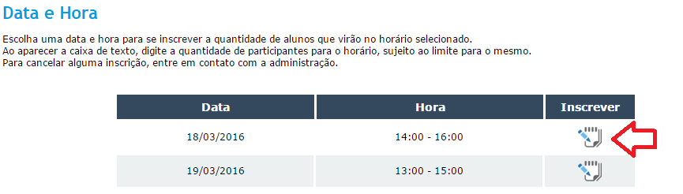
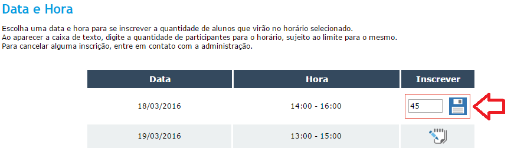
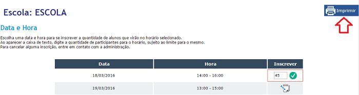
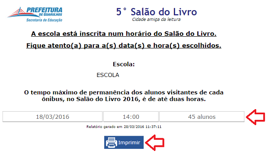

Tutoriais
Para inscrever os alunos, selecione o DIA e o HORÁRIO desejados clicando no ícone da coluna "INSCRIÇÃO".
Ao selecionar o ícone, aparecerá um campo onde é possível inserir a quantidade total de alunos que serão inscritos no DIA e HORÁRIO selecionados.
Ao encerrar, clique no ícone de disquete para salvar as alterações daquele DIA e HORÁRIO. A quantidade de inscritos está sujeita ao limite para o dia e horário selecionados pela comissão organizadora.
 
É possível alterar a quantidade de inscritos a qualquer momento.
Para cancelar uma inscrição, é necessário entrar em contato com a comissão responsável pela organização do Salão do Livro.
Para imprimir o comprovante de inscrição, clique no botão "IMPRIMIR" localizado à direita no topo da página.

Ao clicar em "IMPRIMIR", será aberto uma nova página com o comprovante de inscrição. Verifique as informações dos dias e horários inscritos e clique novamente em "IMPRIMIR" para imprimi-lo.
